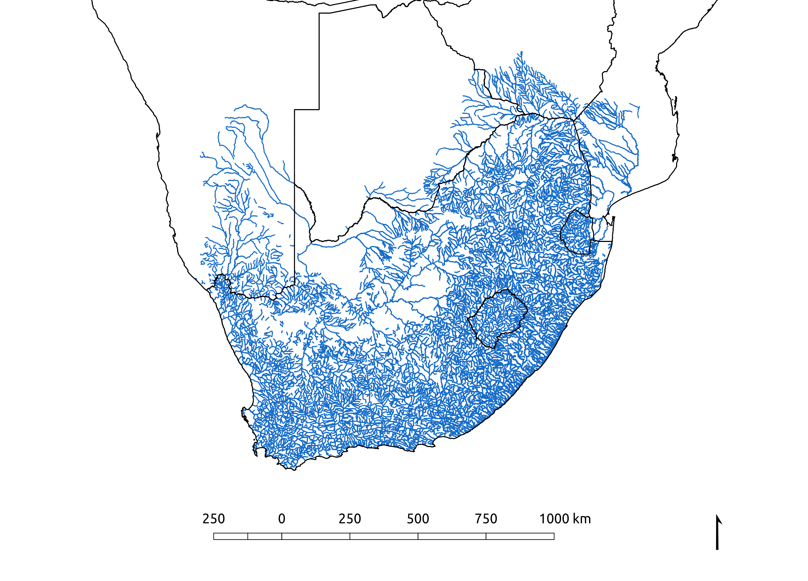
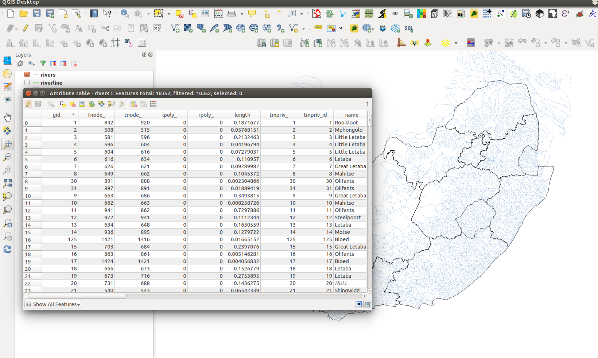

Working with spatial and attribute data
Spatial data
- Spatial data, also called geographic data, is information that describes the location and the geometry of features.
- You can see this information on the computer screen or as a printed map.
- All the maps in the atlas are examples of spatial data.

Map of SA drainage
Attribute data
- Attribute data is tabular or textual data that describes the geographic characteristics or non-spatial information of features.
- Examples of attribute data for a river might be the name of the river, length, stream order, drainage basin name, sediment load and discharge.
- Attribute data can be either vector data or raster data (e.g. satellite image).
- In raster datasets, information is associated with a unique value of a raster cell.

Image of attribute data